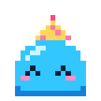

Ctrl+K quick capturedouble-click new noteF focusCtrl+\ just the boardM ask Mochispace drag to pan

What’s new ✦
Hi, I'm Mochi!
I'm a little helper who lives in your boards. Let's get you set up. It takes about a minute.
Make it yours
Pick my color and how the app looks. You can change these anytime.
My colorMe in the dock and the logo
ThemeLight, dark, or match your system
My thinking
I think with Claude Code on your computer. My helpers are connections in your Claude account: Mobbin finds real app screens, Higgsfield makes images (it costs credits, so I always ask first).
You're trying the web version, so I can't connect to Claude, Mobbin or Higgsfield here. Everything else works! Download the desktop app and I'll connect to all three.
Not ready yet? That's fine, skip it. Connect later, then tap here or in Settings.
How I talk
Some people like a chatty buddy, some like quiet. Both are great.
How chattyQuiet only talks when you ask
Remember our chatsSaved in your board files on this computer
Your board
How cards feel when you make them.
New note colorWhat a fresh note starts as
You're all set!
Want a quick tour? I'll show you around and you can try things as we go. About a minute.
Everything here lives in Settings (the ⚙ next to Mochiboard), including this tour.
Mochi
Settings
UpdatesChecking for a new version…
ToolbarChoose which tools sit at the bottom, and in what order
New here, or need a refresher?Mochi shows you around in about a minute
Look
ThemeLight, dark, or whatever your system is using
Your cursor
Cursor colorPick one, or tap the last dot for any color
Mochi
Her colorMochi in the dock and the logo
How chatty she isQuiet only talks when you ask. Chatty adds little tips and cheers.
Remember chatsChats are saved in your board files on this computer. Off forgets each chat as you go.
How many messages to keepOlder messages fall off the top
Saved chatsDeletes Mochi's chat history from every board
Claude usage
Today–
Last 7 days–
Since you started–
Just Mochi's share, counted on this computer. Your plan's limits cover everything you do with Claude.
Mochi's helpers
This is the web version, so Mochi can't reach Claude Code or your helpers from here. Download the desktop app to connect them.
Helpers are the connections in your Claude account. Connect one in Claude's settings, then come back and tap .
The board
ColorsThe background, dots, panels and accent. Right-click any board to give just that board its own background.
Grid shapeDots, or something a little cuter
New note colorWhat a fresh note starts as
Your boards
Saved on this computerYour boards never leave your computer
MochiboardA planning canvas for designers, with Mochi as your helper. Free and open source (MIT).
made with love by
Jessa Wolfe
Product designer. I built Mochiboard for the way my brain plans things, and I hope it fits yours too.
Linux version by chiangs.